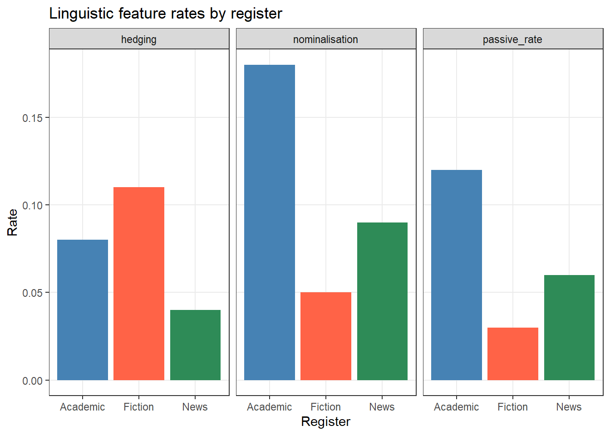

install.packages("dplyr")
install.packages("tidyr")
install.packages("stringr")
install.packages("ggplot2") # one preview example later; proper coverage in Ch 6
install.packages("flextable")
install.packages("openxlsx")
install.packages("here")
install.packages("checkdown")5 Handling Tables and Data Cleaning in R
6 Introduction
This chapter shows how to work with tables and how to process and manipulate tabular data in R. Tables are one of the most fundamental data structures in quantitative research: almost every dataset you will encounter — corpus metadata, survey responses, frequency counts, experimental results — arrives in tabular form. Knowing how to inspect, reshape, filter, summarise, join, and clean tables efficiently is therefore one of the most important practical skills in R.
The chapter uses the tidyverse family of packages throughout, particularly dplyr and tidyr. These packages provide a consistent, readable grammar for data manipulation that has become the standard in modern R programming. A highly recommended companion resource is (wickham2016r?) (freely available at r4ds.hadley.nz), which covers these tools in much greater depth.
TipWhat This Chapter Covers
- Table types in R — matrices, data frames, and tibbles
- Inspecting tables — exploring structure, dimensions, and contents
- Selecting and filtering — extracting columns and rows
- Mutating and recoding — creating and modifying columns
- Renaming and reordering — cleaning up column names
-
Sorting — arranging rows with
arrange() - Grouping and summarising — collapsing data by group
- Reshaping — pivoting between wide and long format
- Joining tables — combining data from multiple sources
-
Handling missing values — detecting and dealing with
NA - Saving tables — writing to CSV, Excel, and RDS
Note: Loading data from CSV, Excel, text, JSON, XML, and other file formats is covered in detail in Chapter 2 (Working with Data). This chapter assumes you already have a data frame in your R session and focuses on manipulating it.
Preparation and Session Set-up
Install the required packages (once only):
Load the packages at the start of each session:
We will use a simulated dataset throughout this chapter. It represents a small corpus study: 120 observations of speech events from speakers across three registers, with metadata on speaker age, gender, proficiency, and word count.
set.seed(42)
corpus_meta <- data.frame(
doc_id = paste0("doc", sprintf("%03d", 1:120)),
speaker_id = paste0("spk", rep(1:40, each = 3)),
register = rep(c("Academic", "News", "Fiction"), times = 40),
gender = rep(c("Female", "Male", "Female", "Male",
"Female", "Male", "Female", "Male",
"Female", "Male"), each = 12),
age_group = rep(c("18-30", "31-50", "51+"), times = 40),
l1 = sample(c("English", "German", "Mandarin", "Arabic"),
120, replace = TRUE, prob = c(0.5, 0.2, 0.2, 0.1)),
word_count = c(
round(rnorm(40, mean = 320, sd = 55)), # Academic
round(rnorm(40, mean = 210, sd = 40)), # News
round(rnorm(40, mean = 275, sd = 65)) # Fiction
),
year = sample(2018:2023, 120, replace = TRUE),
stringsAsFactors = FALSE
)
# Introduce a few missing values for later sections
corpus_meta$word_count[c(5, 23, 67)] <- NA
corpus_meta$l1[c(12, 88)] <- NAWe also create a second, smaller table that we will use for the joining section:
speaker_info <- data.frame(
speaker_id = paste0("spk", 1:40),
native_country = sample(
c("Australia", "UK", "Germany", "China", "Egypt"),
40, replace = TRUE, prob = c(0.35, 0.25, 0.2, 0.15, 0.05)
),
education = sample(c("Undergraduate", "Postgraduate", "PhD"),
40, replace = TRUE),
stringsAsFactors = FALSE
)7 Table Types in R
NoteSection Overview
What you’ll learn: The three main table types in R and when each is appropriate
Key concept: Data frames (and tibbles) are the standard for mixed-type tabular data
The three most common table types in R are:
Matrices store data of a single type only. If even one element is a character string, every other element is coerced to character as well. Matrices are used for numerical operations (e.g., in linear algebra or distance computations) but are rarely the right choice for storing research data with mixed variable types.
Data frames are the workhorse of R data analysis. Each column is a vector that can hold its own type (numeric, character, factor, logical), so different variable types coexist freely. Rows represent observations; columns represent variables.
Tibbles are the tidyverse version of data frames. They behave like data frames in almost all respects but have nicer default printing (they show only the first 10 rows and annotate column types), and they are slightly stricter about subsetting (less silent failure). All dplyr and tidyr operations work identically on data frames and tibbles.
[1] "matrix" "array" typeof(m[1, "age"]) # character, not numeric![1] "character"# A data frame: types are preserved per column
df <- data.frame(name = c("Alice", "Bob"), age = c(28, 34))
class(df)[1] "data.frame"class(df$age) # numeric, as intended[1] "numeric"[1] "tbl_df" "tbl" "data.frame"
TipWhich to Use?
8 Inspecting Tables
NoteSection Overview
Before doing anything with a dataset, always inspect it first. A handful of functions give you a rapid, comprehensive picture.
# First 6 rows (default)
head(corpus_meta) doc_id speaker_id register gender age_group l1 word_count year
1 doc001 spk1 Academic Female 18-30 Arabic 300 2018
2 doc002 spk1 News Female 31-50 Arabic 330 2020
3 doc003 spk1 Fiction Female 51+ English 352 2020
4 doc004 spk2 Academic Female 18-30 German 397 2021
5 doc005 spk2 News Female 31-50 Mandarin NA 2022
6 doc006 spk2 Fiction Female 51+ Mandarin 392 2021# First 10 rows
head(corpus_meta, 10) doc_id speaker_id register gender age_group l1 word_count year
1 doc001 spk1 Academic Female 18-30 Arabic 300 2018
2 doc002 spk1 News Female 31-50 Arabic 330 2020
3 doc003 spk1 Fiction Female 51+ English 352 2020
4 doc004 spk2 Academic Female 18-30 German 397 2021
5 doc005 spk2 News Female 31-50 Mandarin NA 2022
6 doc006 spk2 Fiction Female 51+ Mandarin 392 2021
7 doc007 spk3 Academic Female 18-30 German 338 2019
8 doc008 spk3 News Female 31-50 English 377 2023
9 doc009 spk3 Fiction Female 51+ Mandarin 371 2018
10 doc010 spk4 Academic Female 18-30 German 360 2023# Last 6 rows
tail(corpus_meta) doc_id speaker_id register gender age_group l1 word_count year
115 doc115 spk39 Academic Male 18-30 Mandarin 331 2021
116 doc116 spk39 News Male 31-50 Mandarin 265 2018
117 doc117 spk39 Fiction Male 51+ English 181 2023
118 doc118 spk40 Academic Male 18-30 English 317 2019
119 doc119 spk40 News Male 31-50 Mandarin 306 2020
120 doc120 spk40 Fiction Male 51+ German 275 2018# Dimensions (rows × columns)
dim(corpus_meta)[1] 120 8nrow(corpus_meta)[1] 120ncol(corpus_meta)[1] 8# Column names
names(corpus_meta)[1] "doc_id" "speaker_id" "register" "gender" "age_group"
[6] "l1" "word_count" "year" # Structure: column types and first values
str(corpus_meta)'data.frame': 120 obs. of 8 variables:
$ doc_id : chr "doc001" "doc002" "doc003" "doc004" ...
$ speaker_id: chr "spk1" "spk1" "spk1" "spk2" ...
$ register : chr "Academic" "News" "Fiction" "Academic" ...
$ gender : chr "Female" "Female" "Female" "Female" ...
$ age_group : chr "18-30" "31-50" "51+" "18-30" ...
$ l1 : chr "Arabic" "Arabic" "English" "German" ...
$ word_count: num 300 330 352 397 NA 392 338 377 371 360 ...
$ year : int 2018 2020 2020 2021 2022 2021 2019 2023 2018 2023 ...# tidyverse-style structure overview (more readable)
dplyr::glimpse(corpus_meta)Rows: 120
Columns: 8
$ doc_id <chr> "doc001", "doc002", "doc003", "doc004", "doc005", "doc006",…
$ speaker_id <chr> "spk1", "spk1", "spk1", "spk2", "spk2", "spk2", "spk3", "sp…
$ register <chr> "Academic", "News", "Fiction", "Academic", "News", "Fiction…
$ gender <chr> "Female", "Female", "Female", "Female", "Female", "Female",…
$ age_group <chr> "18-30", "31-50", "51+", "18-30", "31-50", "51+", "18-30", …
$ l1 <chr> "Arabic", "Arabic", "English", "German", "Mandarin", "Manda…
$ word_count <dbl> 300, 330, 352, 397, NA, 392, 338, 377, 371, 360, 263, 315, …
$ year <int> 2018, 2020, 2020, 2021, 2022, 2021, 2019, 2023, 2018, 2023,…# Statistical summary per column
summary(corpus_meta) doc_id speaker_id register gender
Length :120 Length :120 Length :120 Length :120
N.unique :120 N.unique : 40 N.unique : 3 N.unique : 2
N.blank : 0 N.blank : 0 N.blank : 0 N.blank : 0
Min.nchar: 6 Min.nchar: 4 Min.nchar: 4 Min.nchar: 4
Max.nchar: 6 Max.nchar: 5 Max.nchar: 8 Max.nchar: 6
age_group l1 word_count year
Length :120 Length :120 Min. :129.0 Min. :2018
N.unique : 3 N.unique : 4 1st Qu.:210.0 1st Qu.:2019
N.blank : 0 N.blank : 0 Median :260.0 Median :2020
Min.nchar: 3 Min.nchar: 6 Mean :267.4 Mean :2020
Max.nchar: 5 Max.nchar: 8 3rd Qu.:324.0 3rd Qu.:2022
NAs : 2 Max. :403.0 Max. :2023
NAs :3 The summary() output is especially useful: it shows the range, quartiles, and mean for numeric columns, and a frequency table for factor columns. Crucially, it also shows the count of NA values per column — a quick way to spot missing data.
TipExercises: Inspecting Tables
Q1. You receive a new dataset and run dim(df) which returns c(2500, 18). What does this tell you?
Q2. Which function provides the most compact overview of column names AND their types AND the first few values in one call?
9 Selecting and Filtering
NoteSection Overview
What you’ll learn: How to extract specific columns and rows from a data frame
Key functions: dplyr::select(), dplyr::filter()
Key concept: select() operates on columns; filter() operates on rows
Selecting Columns with select()
select() keeps only the columns you name. It never changes the rows.
doc_id register word_count
1 doc001 Academic 300
2 doc002 News 330
3 doc003 Fiction 352
4 doc004 Academic 397
5 doc005 News NA doc_id speaker_id register gender age_group word_count
1 doc001 spk1 Academic Female 18-30 300
2 doc002 spk1 News Female 31-50 330
3 doc003 spk1 Fiction Female 51+ 352
4 doc004 spk2 Academic Female 18-30 397
5 doc005 spk2 News Female 31-50 NAselect() also accepts helper functions that select columns by pattern, type, or position:
# Columns whose names start with a given string
corpus_meta |>
dplyr::select(dplyr::starts_with("s")) |>
head(3) speaker_id
1 spk1
2 spk1
3 spk1 doc_id speaker_id
1 doc001 spk1
2 doc002 spk1
3 doc003 spk1 Document Register Words
1 doc001 Academic 300
2 doc002 News 330
3 doc003 Fiction 352Filtering Rows with filter()
filter() keeps only rows where the condition is TRUE. It never changes the columns.
doc_id speaker_id register gender age_group l1 word_count year
1 doc004 spk2 Academic Female 18-30 German 397 2021
2 doc007 spk3 Academic Female 18-30 German 338 2019
3 doc010 spk4 Academic Female 18-30 German 360 2023
4 doc013 spk5 Academic Male 18-30 Arabic 354 2023
5 doc016 spk6 Academic Male 18-30 Arabic 352 2021 register n
1 Academic 40
2 Fiction 40# Filter on a partial string match
corpus_meta |>
dplyr::filter(stringr::str_detect(doc_id, "00[12]$")) |>
head(5) doc_id speaker_id register gender age_group l1 word_count year
1 doc001 spk1 Academic Female 18-30 Arabic 300 2018
2 doc002 spk1 News Female 31-50 Arabic 330 2020The two functions are almost always used together in a pipeline: first filter the rows you need, then select the columns you need:
TipExercises: Selecting and Filtering
Q1. What is the key difference between select() and filter()?
Q2. You want to keep only rows where register is \"News\" AND word_count is greater than 200. Which code is correct?
10 Mutating and Recoding
NoteSection Overview
What you’ll learn: How to create new columns and modify existing ones
Key functions: dplyr::mutate(), dplyr::if_else(), dplyr::case_when()
mutate() adds new columns or overwrites existing ones while keeping all rows and all other columns unchanged.
Adding a New Column
doc_id word_count word_count_k
1 doc001 300 0.300
2 doc002 330 0.330
3 doc003 352 0.352
4 doc004 397 0.397
5 doc005 NA NABinary Recoding with if_else()
Use dplyr::if_else() (the type-safe tidyverse version of base R ifelse()) to recode a column into two categories:
Multi-Category Recoding with case_when()
case_when() is the tidyverse equivalent of a chain of if/else if statements. Conditions are evaluated top-to-bottom and the first match wins. The final TRUE ~ acts as the catch-all default:
corpus_meta <- corpus_meta |>
dplyr::mutate(
length_band = dplyr::case_when(
word_count < 200 ~ "Very short",
word_count >= 200 & word_count < 300 ~ "Short",
word_count >= 300 & word_count < 400 ~ "Long",
word_count >= 400 ~ "Very long",
TRUE ~ NA_character_ # catches NA word counts
)
)
table(corpus_meta$length_band, useNA = "ifany")
Long Short Very long Very short <NA>
40 54 1 22 3 Recoding Based on String Patterns
Combine mutate() with stringr::str_detect() to recode based on partial string matches — a pattern that comes up constantly in corpus work when working with file names or speaker IDs:
Modifying an Existing Column
Use the same column name on the left-hand side of mutate() to overwrite an existing column:
[1] "Academic" "News" "Fiction"
TipExercises: Mutating
Q1. What happens if you use the same column name on both sides of mutate()?
Q2. In a case_when() call, what happens to rows that do not match any condition and there is no TRUE ~ catch-all?
11 Renaming and Reordering Columns
NoteSection Overview
What you’ll learn: How to rename columns and change their order
Key functions: dplyr::rename(), dplyr::relocate()
Renaming with rename()
rename() uses new_name = old_name syntax:
[1] "Document" "Speaker" "Register" "Gender" "AgeGroup"
[6] "L1" "WordCount" "Year" "word_count_k" "length_class"
[11] "length_band" "period" Renaming by Pattern with rename_with()
rename_with() applies a function to column names — useful for bulk transformations:
# Capitalise the first letter of every column name
corpus_meta |>
dplyr::rename_with(stringr::str_to_title) |>
names() [1] "Doc_id" "Speaker_id" "Register" "Gender" "Age_group"
[6] "L1" "Word_count" "Year" "Word_count_k" "Length_class"
[11] "Length_band" "Period" # Replace all underscores with dots
corpus_meta |>
dplyr::rename_with(~ gsub("_", ".", .x)) |>
names() [1] "doc.id" "speaker.id" "register" "gender" "age.group"
[6] "l1" "word.count" "year" "word.count.k" "length.class"
[11] "length.band" "period" Reordering Columns with relocate()
relocate() moves columns to a new position without dropping any:
word_count doc_id speaker_id register gender age_group l1 year
1 300 doc001 spk1 Academic Female 18-30 Arabic 2018
2 330 doc002 spk1 News Female 31-50 Arabic 2020
3 352 doc003 spk1 Fiction Female 51+ English 2020
word_count_k length_class length_band period
1 0.300 Long Long Early
2 0.330 Long Long Mid
3 0.352 Long Long Mid doc_id speaker_id register year l1 gender age_group word_count
1 doc001 spk1 Academic 2018 Arabic Female 18-30 300
2 doc002 spk1 News 2020 Arabic Female 31-50 330
3 doc003 spk1 Fiction 2020 English Female 51+ 352
word_count_k length_class length_band period
1 0.300 Long Long Early
2 0.330 Long Long Mid
3 0.352 Long Long Mid
12 Sorting with arrange()
NoteSection Overview
What you’ll learn: How to sort rows in ascending or descending order, including multi-column sorting
Key function: dplyr::arrange()
arrange() sorts rows by one or more columns. The default is ascending order; wrap a column in desc() for descending:
doc_id register word_count
1 doc068 News 129
2 doc055 Academic 144
3 doc061 Academic 150
4 doc062 News 151
5 doc059 News 156
6 doc069 Fiction 161
7 doc113 News 162
8 doc076 Academic 166 doc_id register word_count
1 doc021 Fiction 403
2 doc004 Academic 397
3 doc031 Academic 397
4 doc034 Academic 397
5 doc006 Fiction 392
6 doc114 Fiction 385
7 doc008 News 377
8 doc009 Fiction 371 doc_id register word_count
1 doc004 Academic 397
2 doc031 Academic 397
3 doc034 Academic 397
4 doc106 Academic 368
5 doc010 Academic 360
6 doc100 Academic 359
7 doc040 Academic 356
8 doc013 Academic 354
9 doc016 Academic 352
10 doc007 Academic 33813 Grouping and Summarising
NoteSection Overview
What you’ll learn: How to compute group-level summaries — the most common operation in descriptive data analysis
Key functions: dplyr::group_by(), dplyr::summarise(), dplyr::count()
group_by() splits the data into groups; summarise() computes summary statistics within each group and collapses rows to one per group.
Basic Group Summary
corpus_meta |>
dplyr::group_by(register) |>
dplyr::summarise(
n = dplyr::n(),
mean_wc = round(mean(word_count, na.rm = TRUE), 1),
sd_wc = round(sd(word_count, na.rm = TRUE), 1),
min_wc = min(word_count, na.rm = TRUE),
max_wc = max(word_count, na.rm = TRUE),
.groups = "drop"
) |>
flextable() |>
flextable::set_table_properties(width = .75, layout = "autofit") |>
flextable::theme_zebra() |>
flextable::fontsize(size = 12) |>
flextable::fontsize(size = 12, part = "header") |>
flextable::align_text_col(align = "center") |>
flextable::set_caption(caption = "Word count summary by register.") |>
flextable::border_outer()register |
n |
mean_wc |
sd_wc |
min_wc |
max_wc |
|---|---|---|---|---|---|
Academic |
40 |
278.1 |
73.1 |
144 |
397 |
News |
40 |
252.8 |
64.7 |
129 |
377 |
Fiction |
40 |
271.0 |
69.0 |
161 |
403 |
Multi-Variable Grouping
corpus_meta |>
dplyr::group_by(register, gender) |>
dplyr::summarise(
n = dplyr::n(),
mean_wc = round(mean(word_count, na.rm = TRUE), 1),
.groups = "drop"
) |>
flextable() |>
flextable::set_table_properties(width = .6, layout = "autofit") |>
flextable::theme_zebra() |>
flextable::fontsize(size = 12) |>
flextable::fontsize(size = 12, part = "header") |>
flextable::align_text_col(align = "center") |>
flextable::set_caption(caption = "Word count by register and gender.") |>
flextable::border_outer()register |
gender |
n |
mean_wc |
|---|---|---|---|
Academic |
Female |
20 |
285.9 |
Academic |
Male |
20 |
269.9 |
News |
Female |
20 |
256.2 |
News |
Male |
20 |
249.5 |
Fiction |
Female |
20 |
283.3 |
Fiction |
Male |
20 |
258.6 |
count() — Quick Frequency Tables
count() is a shortcut for group_by() + summarise(n = n()):
# Frequency of each register
corpus_meta |>
dplyr::count(register) register n
1 Academic 40
2 News 40
3 Fiction 40# Cross-tabulation: register × gender
corpus_meta |>
dplyr::count(register, gender) register gender n
1 Academic Female 20
2 Academic Male 20
3 News Female 20
4 News Male 20
5 Fiction Female 20
6 Fiction Male 20# Sort by frequency
corpus_meta |>
dplyr::count(l1, sort = TRUE) l1 n
1 English 51
2 Mandarin 27
3 German 22
4 Arabic 18
5 <NA> 2
mutate() After group_by()
When mutate() follows group_by(), it computes the new column within each group but retains all original rows — useful for computing group means alongside individual values:
# A tibble: 8 × 5
doc_id register word_count group_mean_wc deviation
<chr> <fct> <dbl> <dbl> <dbl>
1 doc001 Academic 300 278. 21.9
2 doc002 News 330 253. 77.2
3 doc003 Fiction 352 271 81
4 doc004 Academic 397 278. 119.
5 doc005 News NA 253. NA
6 doc006 Fiction 392 271 121
7 doc007 Academic 338 278. 59.9
8 doc008 News 377 253. 124. After using group_by(), the data frame remains “grouped” until you explicitly ungroup() it. Grouped data frames can produce unexpected results in subsequent operations. Always add dplyr::ungroup() at the end of any pipeline that uses group_by(), or use the .groups = "drop" argument inside summarise().
TipExercises: Summarising
Q1. What is the key difference between using mutate() and summarise() after group_by()?
Q2. What does .groups = \"drop\" do inside summarise()?
14 Reshaping: Wide and Long Format
NoteSection Overview
What you’ll learn: How to convert data between wide format and long format using pivot_longer() and pivot_wider()
Key concept: Long format has one row per observation; wide format has one row per subject with multiple measurement columns
Note on older functions: The tidyverse functions gather() and spread() are deprecated and replaced by pivot_longer() and pivot_wider(). This chapter uses the modern versions.
Reshaping is one of the most frequently needed — and most frequently confusing — data operations. The key is understanding the two formats:
Wide format: Each subject occupies one row; repeated measurements are spread across multiple columns (e.g., score_time1, score_time2, score_time3). Easy for humans to read; needed for some statistical functions.
Long format: Each measurement is its own row; a column identifies which measurement it is. Required by ggplot2 and most tidy statistical functions.
Let us create a small wide-format summary to demonstrate:
# Create a wide-format summary: mean word count per register × gender
wide_summary <- corpus_meta |>
dplyr::group_by(register, gender) |>
dplyr::summarise(mean_wc = round(mean(word_count, na.rm = TRUE), 1),
.groups = "drop") |>
tidyr::pivot_wider(names_from = gender, values_from = mean_wc)
wide_summary |>
flextable() |>
flextable::set_table_properties(width = .5, layout = "autofit") |>
flextable::theme_zebra() |>
flextable::fontsize(size = 12) |>
flextable::fontsize(size = 12, part = "header") |>
flextable::align_text_col(align = "center") |>
flextable::set_caption(caption = "Mean word count per register × gender (wide format).") |>
flextable::border_outer()register |
Female |
Male |
|---|---|---|
Academic |
285.9 |
269.9 |
News |
256.2 |
249.5 |
Fiction |
283.3 |
258.6 |
Wide to Long: pivot_longer()
pivot_longer() gathers multiple columns into key-value pairs — it makes the data longer (more rows, fewer columns):
long_summary <- wide_summary |>
tidyr::pivot_longer(
cols = c(Female, Male), # columns to gather
names_to = "gender", # new column for the old column names
values_to = "mean_wc" # new column for the values
)
long_summary# A tibble: 6 × 3
register gender mean_wc
<fct> <chr> <dbl>
1 Academic Female 286.
2 Academic Male 270.
3 News Female 256.
4 News Male 250.
5 Fiction Female 283.
6 Fiction Male 259.Long to Wide: pivot_wider()
pivot_wider() spreads a key-value pair across multiple columns — it makes the data wider (fewer rows, more columns):
# Back to wide format
long_summary |>
tidyr::pivot_wider(
names_from = gender, # column whose values become new column names
values_from = mean_wc # column whose values fill the new columns
)# A tibble: 3 × 3
register Female Male
<fct> <dbl> <dbl>
1 Academic 286. 270.
2 News 256. 250.
3 Fiction 283. 259.A Linguistic Example
A common situation in corpus work: you have measurements for several linguistic features across multiple text types, and you need to switch between formats depending on whether you are computing a table (wide) or a plot (long):
# Simulate feature counts per register
features_wide <- data.frame(
register = c("Academic", "News", "Fiction"),
passive_rate = c(0.12, 0.06, 0.03),
nominalisation = c(0.18, 0.09, 0.05),
hedging = c(0.08, 0.04, 0.11)
)
# Convert to long format for plotting
features_long <- features_wide |>
tidyr::pivot_longer(
cols = -register, # all columns except register
names_to = "feature",
values_to = "rate"
)
features_long# A tibble: 9 × 3
register feature rate
<chr> <chr> <dbl>
1 Academic passive_rate 0.12
2 Academic nominalisation 0.18
3 Academic hedging 0.08
4 News passive_rate 0.06
5 News nominalisation 0.09
6 News hedging 0.04
7 Fiction passive_rate 0.03
8 Fiction nominalisation 0.05
9 Fiction hedging 0.11The long format is what ggplot2 needs. The following plot is a brief preview of what Chapter 6 covers in depth — don’t worry about the syntax yet:
# Plot in long format (preview of Chapter 6)
ggplot2::ggplot(features_long,
ggplot2::aes(x = register, y = rate, fill = register)) +
ggplot2::geom_col() +
ggplot2::facet_wrap(~ feature) +
ggplot2::scale_fill_manual(values = c("steelblue", "tomato", "seagreen")) +
ggplot2::theme_bw() +
ggplot2::theme(legend.position = "none",
panel.grid.minor = ggplot2::element_blank()) +
ggplot2::labs(title = "Linguistic feature rates by register",
x = "Register", y = "Rate")
TipExercises: Reshaping
Q1. Which format does ggplot2 require for plotting grouped data?
Q2. What is the modern tidyverse replacement for the deprecated gather() and spread() functions?
15 Joining Tables
NoteSection Overview
What you’ll learn: How to combine two data frames by matching on a shared key column
Key functions: dplyr::left_join(), dplyr::inner_join(), dplyr::full_join(), dplyr::anti_join()
Why it matters: Research data is often stored in multiple linked tables — joining is the core operation for combining them
All dplyr join functions take two data frames and a by argument specifying the shared key column(s). They differ in how they handle rows that have no match.
Join Types
Function |
Keeps |
Unmatched rows |
Note |
|---|---|---|---|
left_join(x, y) |
All rows from x; matched rows from y |
NA in y columns |
✓ Most common |
right_join(x, y) |
All rows from y; matched rows from x |
NA in x columns |
|
inner_join(x, y) |
Only rows with a match in both x and y |
Dropped |
|
full_join(x, y) |
All rows from both x and y |
NA where missing |
|
anti_join(x, y) |
Rows in x with NO match in y |
No y columns added |
Useful for diagnostics |
left_join() — The Standard Join
left_join() keeps every row from the left table (x) and attaches matching columns from the right table (y). Rows in x with no match in y get NA in the y columns.
[1] TRUE# New columns have been added
names(corpus_full) [1] "doc_id" "speaker_id" "register" "gender"
[5] "age_group" "l1" "word_count" "year"
[9] "word_count_k" "length_class" "length_band" "period"
[13] "native_country" "education" doc_id speaker_id register native_country education
1 doc001 spk1 Academic UK Postgraduate
2 doc002 spk1 News UK Postgraduate
3 doc003 spk1 Fiction UK Postgraduate
4 doc004 spk2 Academic China Postgraduate
5 doc005 spk2 News China Postgraduate
6 doc006 spk2 Fiction China Postgraduate
7 doc007 spk3 Academic Australia PhD
8 doc008 spk3 News Australia PhD
inner_join() — Matches Only
inner_join() keeps only rows that have a match in both tables. Use it when you only want complete cases:
# Suppose we only have speaker info for speakers 1–25
partial_speaker_info <- speaker_info |>
dplyr::filter(speaker_id %in% paste0("spk", 1:25))
corpus_inner <- corpus_meta |>
dplyr::inner_join(partial_speaker_info, by = "speaker_id")
nrow(corpus_inner) # fewer rows than the original[1] 75
anti_join() — Diagnosing Mismatches
anti_join() returns rows from x that have no match in y — useful for quality checking:
Joining on Multiple Keys
When tables share more than one key column, pass a vector to by:
If the key columns have different names in the two tables, use a named vector:
TipExercises: Joining
Q1. You have a data frame texts with 500 rows and a reference table metadata with 300 rows. You join them with left_join(texts, metadata, by = "doc_id"). How many rows will the result have?
Q2. When would you use anti_join() rather than left_join()?
16 Handling Missing Values
NoteSection Overview
What you’ll learn: How to detect, count, filter, and replace missing values in a data frame
Key functions: is.na(), na.omit(), tidyr::drop_na(), tidyr::replace_na(), dplyr::coalesce()
Missing values (NA) are unavoidable in real data. Handling them incorrectly is one of the most common sources of subtle errors in data analysis. The first step is always to understand where your NAs are and why they are there.
Detecting Missing Values
doc_id speaker_id register gender age_group l1
0 0 0 0 0 2
word_count year word_count_k length_class length_band period
3 0 3 3 3 0 doc_id speaker_id register gender age_group l1
0.0 0.0 0.0 0.0 0.0 1.7
word_count year word_count_k length_class length_band period
2.5 0.0 2.5 2.5 2.5 0.0 # Which rows have at least one NA?
corpus_meta |>
dplyr::filter(dplyr::if_any(dplyr::everything(), is.na)) |>
dplyr::select(doc_id, word_count, l1) doc_id word_count l1
1 doc005 NA Mandarin
2 doc012 315 <NA>
3 doc023 NA Arabic
4 doc067 NA English
5 doc088 247 <NA>Removing Rows with Missing Values
[1] 5[1] 117
WarningThink Before Dropping NA Rows
drop_na() discards entire observations. If missing data is not random (e.g., word count is missing for a specific text type or speaker group), dropping those rows introduces bias. Always investigate why values are missing before deciding how to handle them.
Replacing Missing Values
# Replace NA in a specific column with a fixed value
corpus_meta |>
tidyr::replace_na(list(l1 = "Unknown")) |>
dplyr::count(l1, sort = TRUE) l1 n
1 English 51
2 Mandarin 27
3 German 22
4 Arabic 18
5 Unknown 2
na.rm in Summary Functions
Most R summary functions (mean, sd, sum, min, max) have an na.rm argument. Setting na.rm = TRUE tells the function to ignore NA values rather than propagating them:
17 Saving Tables
NoteSection Overview
What you’ll learn: How to write a cleaned data frame to CSV, Excel, and RDS files
Key functions: write.csv(), openxlsx::write.xlsx(), saveRDS()
Note: Chapter 2 covers data saving in more depth, including advanced options like formatted Excel workbooks and alternative delimiters. This section recaps the most common cases for a cleaned analysis-ready table.
Saving as CSV
# Base R — the most portable format
write.csv(corpus_meta,
file = here::here("data", "corpus_meta_processed.csv"),
row.names = FALSE) # always set row.names = FALSE
# tidyverse readr version — slightly faster, no row names by default
readr::write_csv(corpus_meta,
file = here::here("data", "corpus_meta_processed.csv"))Saving as Excel
library(openxlsx)
# Single sheet
openxlsx::write.xlsx(corpus_meta,
file = here::here("data", "corpus_meta.xlsx"),
sheetName = "Corpus Metadata",
rowNames = FALSE)
# Multiple sheets in one workbook
wb <- openxlsx::createWorkbook()
openxlsx::addWorksheet(wb, "Metadata")
openxlsx::addWorksheet(wb, "Speaker Info")
openxlsx::writeData(wb, "Metadata", corpus_meta)
openxlsx::writeData(wb, "Speaker Info", speaker_info)
openxlsx::saveWorkbook(wb,
file = here::here("data", "corpus_study.xlsx"),
overwrite = TRUE)Saving as RDS
RDS is the best format for saving R objects between sessions. It preserves factor levels, column types, and all R-specific attributes:
Format |
Best for |
Preserves |
Write function |
|---|---|---|---|
CSV (.csv) |
Sharing with other software and collaborators |
Values only (no types, no factor levels) |
write.csv() / readr::write_csv() |
Excel (.xlsx) |
Sharing with non-R users; multi-sheet summaries |
Values and basic formatting |
openxlsx::write.xlsx() |
RDS (.rds) |
Saving processed data between R sessions |
All R types, factor levels, and attributes |
saveRDS() |
TipExercises: Missing Values and Saving
Q1. You run mean(x) on a numeric vector and get NA. What is the most likely cause, and how do you fix it?
Q2. Why is RDS the best format for saving data between R sessions, compared to CSV?
NoteAttribution
This chapter is adapted from the LADAL tutorial Handling Tables in R by Martin Schweinberger. Original source material is released under the GNU General Public License, Version 3.